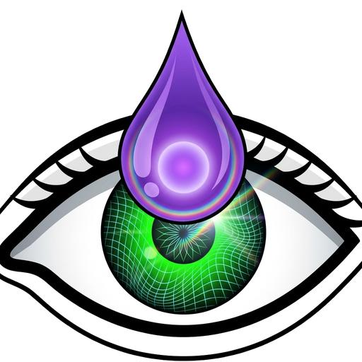
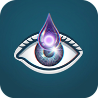

The free, open-source (GPLv3) VJ engine behind this TV.
Desktop app for Linux, macOS and Windows: 35 generators, 27 effects, MIDI and OSC control, Ableton Link, Spout / Syphon output, and live broadcast to this TV.